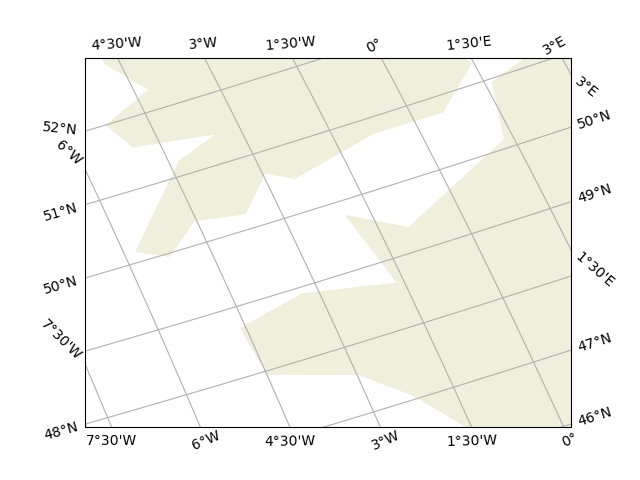
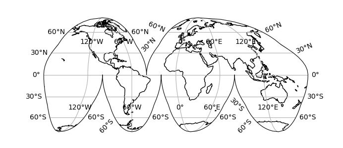
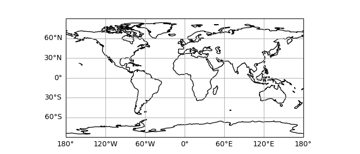

Note
Click here to download the full example code
Gridlines and tick labels¶
These examples demonstrate how to quickly add longitude and latitude gridlines and tick labels on a non-rectangular projection.
As you can see on the first example,
longitude labels may be drawn on left and right sides,
and latitude labels may be drawn on bottom and top sides.
Thanks to the dms keyword, minutes are used when appropriate
to display fractions of degree.
In the second example, labels are still drawn at the map edges despite its complexity, and some others are also drawn within the map boundary.
In the third example, labels are drawn only on the left and bottom sides.
- 
- 
- 
import cartopy.crs as ccrs
import cartopy.feature as cfeature
import matplotlib.pyplot as plt
def main():
rotated_crs = ccrs.RotatedPole(pole_longitude=120.0, pole_latitude=70.0)
ax0 = plt.axes(projection=rotated_crs)
ax0.set_extent([-6, 1, 47.5, 51.5], crs=ccrs.PlateCarree())
ax0.add_feature(cfeature.LAND.with_scale('110m'))
ax0.gridlines(draw_labels=True, dms=True, x_inline=False, y_inline=False)
plt.figure(figsize=(6.9228, 3))
ax1 = plt.axes(projection=ccrs.InterruptedGoodeHomolosine())
ax1.coastlines(resolution='110m')
ax1.gridlines(draw_labels=True)
plt.figure(figsize=(7, 3))
ax2 = plt.axes(projection=ccrs.PlateCarree())
ax2.coastlines(resolution='110m')
gl = ax2.gridlines(draw_labels=True)
gl.top_labels = False
gl.right_labels = False
plt.show()
if __name__ == '__main__':
main()
Total running time of the script: ( 0 minutes 0.851 seconds)